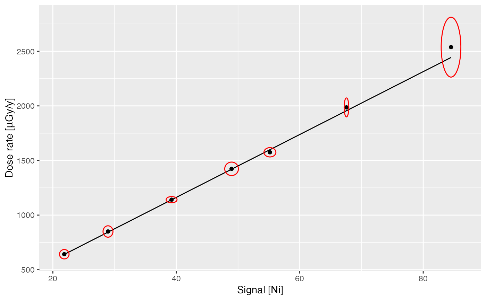

dose_fit builds a calibration curve for gamma dose rate estimation.
dose_fit(object, background, doses, ...) dose_predict(object, spectrum, ...) # S4 method for GammaSpectra,GammaSpectrum,matrix dose_fit( object, background, doses, range_Ni, range_NiEi, alpha = 0.05, details = list(authors = "", date = Sys.time()) ) # S4 method for GammaSpectra,GammaSpectrum,data.frame dose_fit( object, background, doses, range_Ni, range_NiEi, alpha = 0.05, details = list(authors = "", date = Sys.time()) ) # S4 method for CalibrationCurve,missing dose_predict(object, sigma = 1, epsilon = 0) # S4 method for CalibrationCurve,GammaSpectrum dose_predict(object, spectrum, sigma = 1, epsilon = 0) # S4 method for CalibrationCurve,GammaSpectra dose_predict(object, spectrum, sigma = 1, epsilon = 0)
| object | A GammaSpectra or CalibrationCurve object. |
|---|---|
| background | A GammaSpectrum object of a length-two
|
| doses | A |
| ... | Currently not used. |
| spectrum | An optional GammaSpectrum or GammaSpectra object in which to look for variables with which to predict. If omitted, the fitted values are used. |
| range_Ni, range_NiEi | A length-two |
| alpha | A |
| details | A |
| sigma | A |
| epsilon | A |
dose_fit returns a CalibrationCurve object.
dose_predict returns a data.frame with the following
columns:
(character) the name of the spectra.
(numeric) the integrated signal value
(according to the value of threshold; see
signal_integrate).
(numeric) the integrated signal error value
(according to the value of threshold; see
signal_integrate).
(numeric) the predicted gamma dose rate.
(numeric) the predicted gamma dose rate
error.
dose_predict predicts in situ gamma dose rate.
To estimate the gamma dose rate, one of the calibration curves distributed with this package can be used (fig. \@ref(fig:curve)). These built-in curves are in use in several luminescence dating laboratories and can be used to replicate published results. As these curves are instrument specific, the user may have to build its own curve.
The construction of a calibration curve requires a set of reference spectra for which the gamma dose rate is known and a background noise measurement. First, each reference spectrum is integrated over a given interval, then normalized to active time and corrected for background noise. The dose rate is finally modelled by the integrated signal value used as a linear predictor (York *et al.*, 2004).
See vignette(doserate) for a reproducible example.
Mercier, N. & Falguères, C. (2007). Field Gamma Dose-Rate Measurement with a NaI(Tl) Detector: Re-Evaluation of the "Threshold" Technique. Ancient TL, 25(1), p. 1-4.
York, D., Evensen, N. M., Martínez, M. L. & De Basabe Delgado, J. (2004). Unified Equations for the Slope, Intercept, and Standard Errors of the Best Straight Line. American Journal of Physics, 72(3), p. 367-75. doi: 10.1119/1.1632486 .
N. Frerebeau
## Import CNF files ## Spectra spc_dir <- system.file("extdata/BDX_LaBr_1/calibration", package = "gamma") spc <- read(spc_dir) ## Background bkg_dir <- system.file("extdata/BDX_LaBr_1/background", package = "gamma") bkg <- read(bkg_dir) ## Get dose rate values data("clermont") (doses <- clermont[, c("gamma_dose", "gamma_error")])#> gamma_dose gamma_error #> BRIQUE 1986.4620 35.619679 #> C341 849.9668 21.317615 #> C347 1423.8589 25.249756 #> GOU 1575.2249 17.433789 #> LAS 1083.6737 9.570593 #> LMP 641.9004 17.560649 #> MAZ 1141.4033 11.665045 #> MPX 964.0196 13.274167 #> PEP 2538.2217 112.169131## Build the calibration curve calib_curve <- dose_fit(spc, bkg, doses, range_Ni = c(300, 2800), range_NiEi = c(165, 2800)) ## Plot the curve plot(calib_curve, threshold = "Ni")## Estimate gamma dose rates dose_predict(calib_curve, spc)#> names dose_Ni error_Ni dose_NiEi error_NiEi #> 1 BRIQUE 1955.8683 43.71337 1946.9606 39.37676 #> 2 C341 843.9938 21.06715 843.0632 17.05363 #> 3 C347 1420.1912 34.20341 1402.5391 28.36913 #> 4 GOU 1599.0175 37.35386 1598.6341 32.33397 #> 5 LMP 640.1782 16.98411 639.0612 12.92850 #> 6 MAZ 1140.4575 27.44022 1144.1496 23.14262 #> 7 PEP 2443.3517 57.49673 2435.1440 49.25371